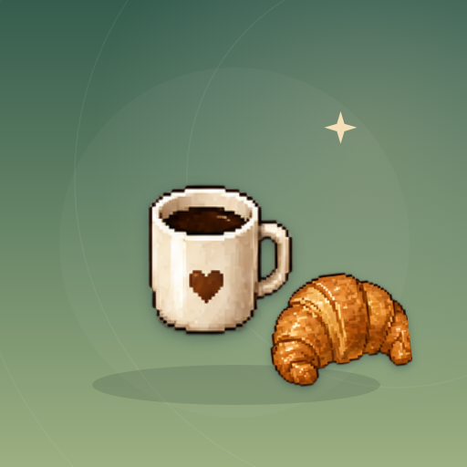

<- all projects

Café Secrets
PC
Volume
Live
Merge pastries and drinks, serve the neighborhood, uncover three mysteries.
Café Secrets is a merge puzzle game with pastries, café orders and a neighborhood mystery. Combine matching items to discover recipes, serve your customers and renovate a welcoming café. There are 16 recipes across pastry and drink chains, with generators that are always available and no energy limits or waiting timers, plus quick, regular and signature order lanes and a small daily goal. Upgrade the bakehouse and coffee corner, or restore windows, plants, tables and lights. Every three orders earn a story clue, across 18 written chapters and three mysteries.